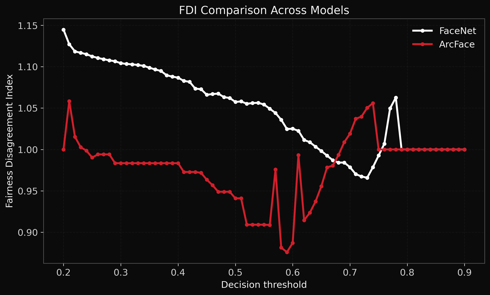
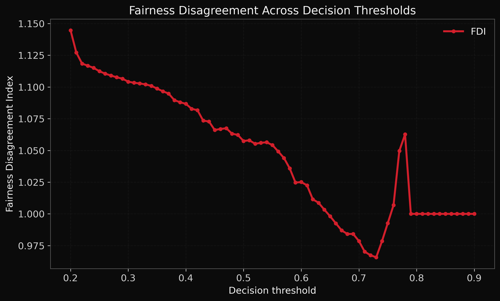

Research Brief
When Fairness Metrics Disagree
This research investigates how different fairness metrics can produce conflicting conclusions when evaluating the same machine learning system. The work introduces the Fairness Disagreement Index (FDI), a measure designed to quantify inconsistency across fairness metrics.
Why This Matters
In high-stakes AI systems, fairness evaluation cannot rely on a single metric. False positive rate disparity, false negative rate disparity, accuracy disparity, and worst-group performance may each tell a different story about the same model.
This creates deployment uncertainty: a system may appear acceptable under one fairness measure while showing substantial risk under another.
Key Findings
- Fairness conclusions can change depending on the metric used.
- Metric disagreement persists across decision thresholds.
- Single-metric fairness reporting is insufficient for reliable deployment assessment.
- FDI provides a structured way to quantify fairness disagreement.

Comparison of Fairness Disagreement Index (FDI) behaviour across FaceNet and ArcFace models under varying decision thresholds.
The results demonstrate that fairness disagreement persists across different model architectures and threshold settings, reinforcing the need for multi-metric fairness evaluation in deployment-sensitive environments.

FDI variation across decision thresholds, illustrating how fairness disagreement changes under different operating conditions.
Deployment Relevance
For AI assurance, fairness disagreement is not just a reporting issue. It can create uncertainty around whether a system is suitable for real-world deployment, especially in sensitive domains such as biometric recognition, healthcare, law enforcement, and automated risk assessment.